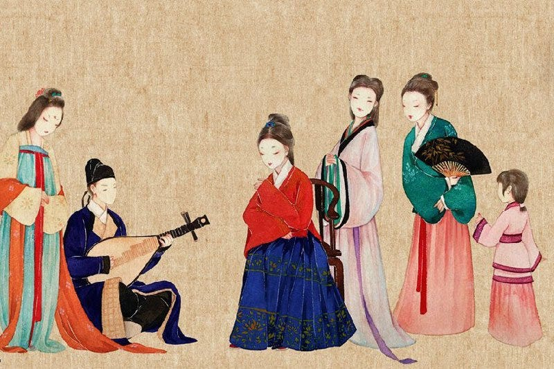
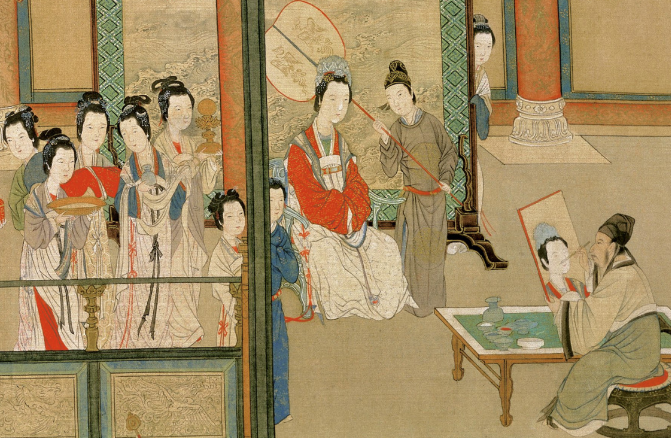
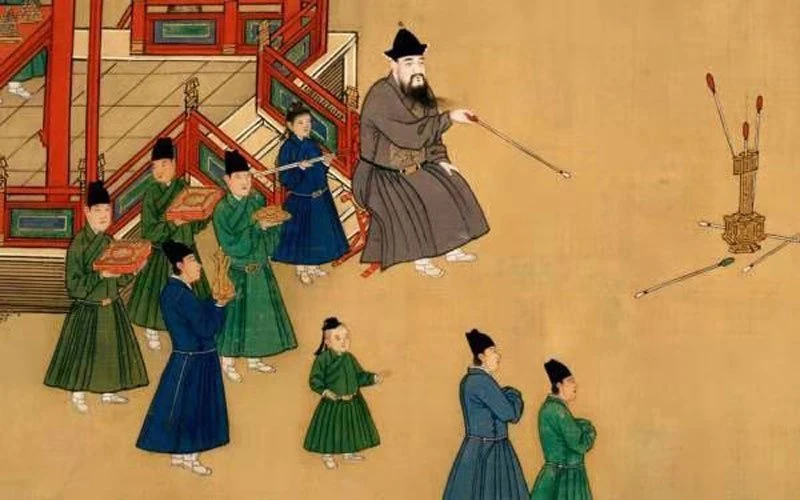

Hanfu is the traditional clothing system of Han people – China's dominant ethnic group. It has eight distinct characteristics, and its history dates back to 4,000 years ago.Hanfu was well established around the Qin Dynasty at around 200 BC. Designs at the time were based on three key principles:
1. It should have a top and bottom.
2. The bottom can be pants or a full-length skirt.
3. The top and bottom meet around the waist.
Those rules would also be prominent during the subsequent and long-lasting Han Dynasty (202 BC–220 AD) around the turn of the millennium. However, sharp cutting edges at the bottom of the top were a signature of the time. As for the ladies, while the skirt's design was quite effeminate, the top was more about strength and power.
When it came to the Wei and Jin dynasties (220-420), the rope look lost its momentum. It began to put more emphasis on a finished look with a division of upper and lower body from the waist, especially by using a belt.
By the Sui and Tang dynasties (581-907), the three principles were still there, but some new ones were added. For instance, a long gown became a new norm.
While a headpiece was added as a new element for men, the ladies' dress wrapped around and began from the chest. The design was meant to create a new look that transforms the body ratio. Accessorizing with some silver and gold embellishments, it created a cheerful and luxuriant look for ladies.
The Song Dynasty (960-1279) innovated based on these four principles. And under these different principles, different styles were born.
Moving into the Ming Dynasty from the 14th to the 16th centuries, we see a mood to mix and match. A typical combo is a short top with a Ma-mian skirt, but it's all very open and easy-going.
People were encouraged to experiment at that time. A long top can also go with a skirt, for instance. However, a major change is on the collar. While keeping the cross-over, round, and symmetric collar, the width of the collar deepens. It can almost wrap around the entire neck.
Hanfu gradually went out of fashion during the Qing Dynasty (1644-1911), and it was largely replaced in the early 20th century.